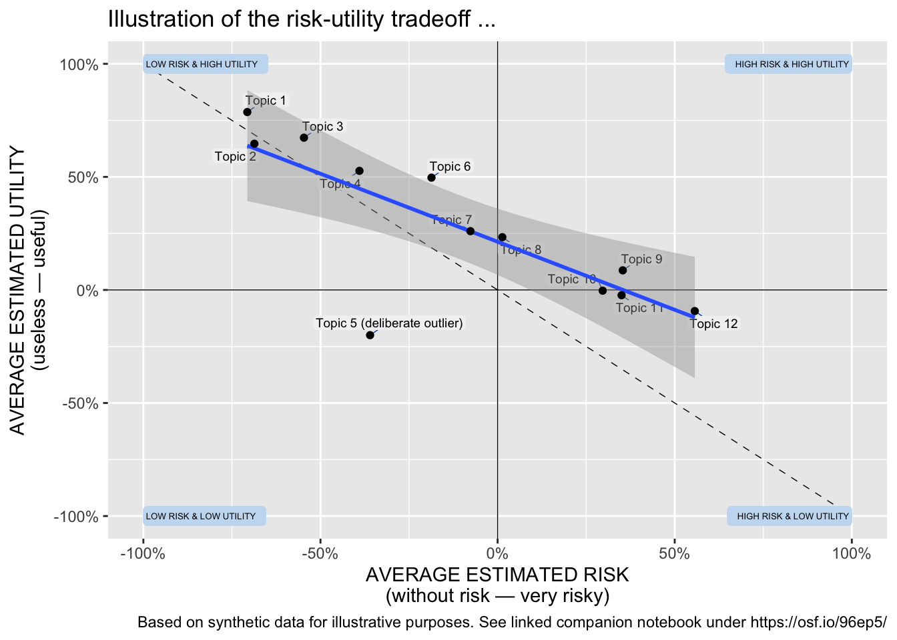

This R notebook serves as an example, demonstrating the analysis and visualization of micro-scenario-based studies. Micro-scenarios provide an approach for evaluating the social acceptance of technologies and the determining factors, along with a visual-spatial mapping of the results. They enable the simultaneous assessment of multiple technologies, ranking them based on different criteria, and analyzing how individual factors and technology-based attributions correlate with the overall assessment of technologies. Utilizing synthetic survey data (generated in a separate notebook), this notebook illustrates how to recode the data, aggregate scenario scores as user factors, calculate topic scores, and visualize them using the R programming language, along with ggplot and tidyverse.
The micro-scenario approach simplifies measuring people’s opinions on different topics. It connects these opinions to individual user factors (research perspective 1), ranks the topics, and creates a visual map to pinpoint conflicting issues (research perspective 2), all within a single survey.
For instance, consider analysing risk-utility trade-offs among various technologies: Do individuals attribute varying risks and utilities to distinct technologies? Are people predisposed to different risk or utility perceptions? Is the comparability of risk-utility trade-offs consistent across different technologies, and can these trade-offs be quantified? Figure 1 illustrates the overall approach.
Figure 1: The micro-scenario approach involves consolidating evaluations of diverse topics in a single survey. These evaluations are treated as topic assessments and spatially mapped to analyze the interrelationships among them.
The main article provides comprehensive insights into this approach and outlines the methodology for designing and analyzing studies. You can locate and cite the main article here:
Visual Cognitive Mapping: Assessing Social Acceptance of Emerging Technologies through Micro Scenarios, Philipp Brauner & Julia Offermann (2024)
This notebook demonstrates the calculation of data for the two research perspectives of the micro-scenario approach (Perspective 1: user factor and Perspective 2: topic factor) using R. Note that all transformations and calculations can also be performed using other software.
In this example, we utilize synthetic data generated to resemble real survey data. This choice simplifies the follow-through of our approach, eliminating the need for cleaning the data from irrelevant variables or erroneous participant inputs. Additionally, the synthetic data adheres to pre-specified properties. The creation of the synthetic data is detailed in the companion notebook within the same folder.
The rest of this notebook is organized as follows: Firstly, we load the necessary packages, followed by loading the synthetic data as our input (replace this with your actual data). Secondly, we transform the data into the long format (refer to, for instance, https://tidyr.tidyverse.org/reference/pivot_longer.html), proceed to analyse the data as a user factor (research perspective 1), and subsequently as a topic factor which includes visualizing the outcomes (research perspective 2).
Preparation
Load required libraries
In our analysis, we mainly use the tidyverse and ggplot packages.
library(tidyverse)
── Attaching core tidyverse packages ──────────────────────── tidyverse 2.0.0 ──
✔ dplyr 1.1.4 ✔ readr 2.1.4
✔ forcats 1.0.0 ✔ stringr 1.5.1
✔ ggplot2 3.4.4 ✔ tibble 3.2.1
✔ lubridate 1.9.3 ✔ tidyr 1.3.0
✔ purrr 1.0.2
── Conflicts ────────────────────────────────────────── tidyverse_conflicts() ──
✖ dplyr::filter() masks stats::filter()
✖ dplyr::lag() masks stats::lag()
ℹ Use the conflicted package (<http://conflicted.r-lib.org/>) to force all conflicts to become errors
library(scales) # format_percent
Attaching package: 'scales'
The following object is masked from 'package:purrr':
discard
The following object is masked from 'package:readr':
col_factor
library(ggplot2) # graphicslibrary(ggrepel) # label placement in the scatter plotlibrary(knitr) # Tables
Load Data
In this demonstration, we will load the synthetic data that emulates the properties found in real survey data. The other notebook demonstrates the creation of the synthetic data. Figure 2 illustrates the structure of a standard dataset from survey tools, where each row represents the responses from an individual participant.
Figure 2: Illustration of typical survey data utilizing the micro-scenario approach, featuring user demographics, additional user factors, and topic evaluations.
The data structure closely resembles the data export from the Qualtrics survey tool. The process of generating synthetic data is documented in the companion notebook within the same folder.
The loaded dataset has various variables. Initially, there’s a unique user identifier (id), followed by a user variable (e.g., attitude towards a topic). Subsequently, there are an arbitrary number of topic assessments (N in our example) with variables for each evaluation dimension. In this instance, we use perceived risk and perceived utility as examples for the topic evaluations. However, one can employ different or additional evaluation dimensions (as detailed in the article).
The variables for the topic evaluations adhere to a standardized naming scheme, i.e., a01_matrix_02, where 01 denotes the ID of the queried topic, 02 represents the queried evaluation dimension, and matrix stands for the name of the variable block in the survey tool. This naming scheme is employed by Quartics.
Analysis of the data
Once the (synthetic) survey data is loaded into the variable data, we can commence the actual analysis.
Setup
Firstly, read the list of queried topics and their labels from a .csv file (adjustable based on your needs). Secondly, define the queried evaluation dimensions. In this instance, we have a vector of two dimensions, but one can define more based on your research questions and survey structure.
Next, the topic evaluations from the survey data is transformed into the long format using pivot_longer (one row with a single value for each participant, topic, and evaluation dimension; one row per observation). Hereto, we use that the variables for the topic evaluations in the original data table have a systematic naming convention (see above).
The resulting data set contains a participant identifier, identifier for the topic and the evaluation dimension, and lastly a column for the value. We use this format as the foundation for the later transformation steps.
evaluationsLong <- data %>%# selects columns id and "aNUMBER_matrix_NUMBER" (scheme from loop&merge) dplyr::select(id, matches("a\\d+\\_matrix\\_\\d+")) %>% tidyr::pivot_longer(cols =matches("a\\d+\\_matrix\\_\\d+"), # topics and their evaluationsnames_to =c("question", "dimension"),names_pattern ="(.*)_matrix_(.*)", # Separate topic ID and evaluation ID values_to ="value",values_drop_na =FALSE) %>% dplyr::mutate( dimension =as.numeric(dimension) ) %>% dplyr::mutate( dimension = DIMENSIONS[dimension]) %>%# change to readable dimension names dplyr::mutate( value =-(((value -1)/3) -1)) # rescale value from [ 1...7 ] to [ -100%...100% ]# Recode some of the evaluation dimensions if necessaryevaluationsLong <- evaluationsLong %>% dplyr::mutate( value =if_else(dimension!="risk", value, -value))
Perspective 1: As user factor
The initial perspective provides a straightforward view of the data. The different presented scenarios serve as a basis for the repeated measurement of the same latent construct and the resulting score can be interpreted as a user factor (or individual differences).
For each evaluation dimension (e.g., risk and utility), we compute average scores across all queried topics. Using these cores one can, for instance, investigate if the overall attributions differ among participants or if they correlate with other queried user factors. For example, exploring if the average risk attributed to all topics relates to a general disposition to risk measured using other psychometric scales.
Subsequently, we rejoin these user factors with the original data using, for instance, dplyr::left_join(). Afterwards, the calculated average evaluations can be regarded as individual differences and correlated with other user factors obtained from the survey.
Pearson's product-moment correlation
data: evaluationByParticipant$utility_mean and evaluationByParticipant$uservariable
t = 2.1082, df = 98, p-value = 0.03757
alternative hypothesis: true correlation is not equal to 0
95 percent confidence interval:
0.01237368 0.38879757
sample estimates:
cor
0.2082856
Perspective 2: Topic factors
Next, we delve into the analysis of topic evaluations: Instead of looking at how individual participants perceive the topics as a whole, only all test subject assessments are assigned to the respective topics, for example in order to be able to rank the technologies in terms of the evaluation dimensions. We start with reporting the average evaluations (e.g., risk and utility) across all queried topics.
Calculate Average evaluations
Using the long format, we group by evaluation dimension and aggregate across all topics and participants. Note: For a complete sample, the results are equivalent to perspective 1 (see above). Table 1 and Figure 3 show the outcome of this calculation.
# MEAN and SD of all evaluation dimensions across all queried topicsevaluationByDimension <- evaluationsLong %>% dplyr::group_by( dimension ) %>% dplyr::summarise( mean =mean(value, na.rm =TRUE),sd =sd(value, na.rm =TRUE),.groups="drop")
Table 1: Averages for each evaluation dimension across all queried topics and across all participants.
dimension
mean
sd
risk
-0.15
0.46
utility
0.29
0.38
overallDimension <-ggplot(evaluationByDimension,aes(x = dimension, y = mean)) +geom_bar(stat ="identity") +scale_y_continuous(labels =percent_format(),limits=c( -1, +1 )) +labs(x ="Evaluation Dimension",y ="Values",title ="Average Evaluation across all Dimensions and Participants")overallDimension
Figure 3: Mean evaluation across all topics and aggregated across all participants.
Prepare Individual Topics
Now, we compute the average evaluations for each topic across all participants. The resulting data frame contains N rows for the number of topics queried and rows for the arithmetic mean and standard deviation for each evaluated dimension (e.g., risk and utility). Finally, we associate labels with each topic using dplyr::left_join(). Figure 4 illustrates the structure of the resulting data.
Figure 4: The resulting data format displays the evaluation of topics. Each row contains the mean evaluation (along with its dispersion) for a specific topic. This structured data can be subjected to further analysis.
The output can be tabulated, sorted, or filtered based on highest/lowest evaluations, and visualized. Table 2 displays the unsorted and unfiltered results.
Table 2: Average evaluation of the queried topics.
label
risk_mean
risk_sd
utility_mean
utility_sd
Topic 1
-0.73
0.25
0.61
0.27
Topic 10
0.31
0.27
0.15
0.28
Topic 11
0.35
0.24
0.04
0.24
Topic 12
0.43
0.27
-0.09
0.24
Topic 2
-0.63
0.25
0.66
0.25
Topic 3
-0.51
0.25
0.69
0.22
Topic 4
-0.49
0.24
0.47
0.22
Topic 5 (deliberate outlier)
-0.30
0.26
-0.18
0.27
Topic 6
-0.24
0.24
0.39
0.25
Topic 7
-0.08
0.29
0.36
0.24
Topic 8
0.01
0.28
0.29
0.26
Topic 9
0.13
0.28
0.04
0.22
Topic Correlations
Next, we analyse the correlation between the evaluation dimensions across the topics. In the example in Table 3, we investigate if the attribute risk is related to the attributed utility for the different topics under consideration. In this example, we have only two target variables for the topic evaluations. With more variables, more complex analyses become possible: Such as determining if and to what degree a linear model with risk and utility explains the overall valence towards the queried topics.
Note: Our analysis focuses on the correlations between the topics as attributed by the participants, rather than individual differences among participants.
Table 3: Correlations between the evaluation dimensions across all topics
Parameter1
Parameter2
r
CI
CI_low
CI_high
t
df_error
p
Method
n_Obs
risk_mean
utility_mean
-0.7590283
0.95
-0.9284779
-0.3280107
-3.686707
10
0.0041996
Pearson correlation
12
Visualize the Topics
Finally, the results are presented through a scatter plot. The plot in Figure 5 allows for the visual identification of the dispersion of topics on a spatial map defined by the evaluation dimension. It helps assess if there is a (linear) relationship between the queried evaluation dimensions of the topics, the slope and intercept of that relationship, and if some topics exhibit significantly different evaluations compared to others (outliers).
scatterPlot <- evaluationByTopic %>%ggplot( aes( x = risk_mean,y = utility_mean,label = shortlabel)) +coord_cartesian(clip ="on") +geom_vline(xintercept =0, size =0.25, color="black", linetype=1) +geom_hline(yintercept =0, size =0.25, color="black", linetype=1) +# diagonal line indicating where both dimensions are congruent annotate("segment",x =-1, y =+1,xend =+1, yend =-1,colour ="black",linewidth =0.25,linetype =2) +# Annotate the quadrantsgeom_label(aes(x =-1, y =-1, label ="LOW RISK & LOW UTILITY"),vjust ="middle", hjust ="inward",size =1.75,label.size =NA, color="black", fill ="#c7ddf2") +geom_label(aes(x =-1, y =+1, label ="LOW RISK & HIGH UTILITY"),vjust ="middle", hjust ="inward",size =1.75,label.size =NA, color="black", fill ="#c7ddf2") +geom_label(aes(x =+1, y =-1, label ="HIGH RISK & LOW UTILITY"),vjust ="middle", hjust ="inward",size =1.75,label.size =NA, color="black", fill ="#c7ddf2") +geom_label(aes(x =+1, y =+1, label ="HIGH RISK & HIGH UTILITY"),vjust ="middle", hjust ="inward",size =1.75,label.size =NA, color="black", fill ="#c7ddf2") +# add the labels...geom_label_repel(max.time =3,color ="black",fill ="gray95",force_pull =0,max.overlaps =Inf,ylim =c(-Inf, Inf),xlim =c(-Inf, Inf),segment.color ="#00549f",segment.size =0.25,min.segment.length =0,size =2.5,label.size =NA,label.padding =0.105,box.padding =0.125 ) +geom_smooth(method ="lm", se =TRUE) +geom_point() +# geom for the data pointslabs( title ="Illustration of the risk-utility tradeoff ...",caption ="Based on synthetic data for illustrative purposes. See linked companion notebook under https://osf.io/96ep5/",x ="AVERAGE ESTIMATED RISK\n(without risk — very risky)",y ="AVERAGE ESTIMATED UTILITY\n(useless — useful)") +scale_x_continuous(labels =percent_format(), limits=c( -1, +1 )) +scale_y_continuous(labels =percent_format(), limits=c( -1, +1 ))scatterPlotggsave("simulatedriskutility.pdf",plot = scatterPlot,width =8, height =6,units ="in")

Figure 5: Scatter plot of the evaluations of the micro scenarios.
Closing remarks
This notebook showcases the analysis and visualization of surveys using the micro-scenario approach. It includes executable code for examining both research perspectives (individual differences and topic evaluation), which can be adjusted to suit your own survey and data. Ensure accurate coding and polarization of input variables.
It is crucial to recognize the limitations of this approach (e.g., when point estimations are acceptable, potential bias from topic sampling), and refer to the main articles for further guidance and strategies for mitigation.
Acknowledgements:
This approach evolved over time and through several research projects.
I would like to thank all those who have directly or indirectly, consciously or unconsciously, inspired me to take a closer look at this approach and who have given me the opportunity to apply this approach in various contexts. In particular, I would like to thank:
Julia Offermann, for indispensable discussions about this approach and so much encouragement and constructive comments during the last meters of the manuscript.
Ralf Philipsen, without whom the very first study with that approach would never have happened, as we developed the crazy idea to explore the benefits of barriers of using questions in Limesurvey.
Martina Ziefle for igniting scientific curiosity and motivating me to embark on a journey of boundless creativity and exploration.
Felix Glawe, Luca Liehner, and Luisa Vervier for working on a study that took this concept to another level.
Julian Hildebrandt for in-depth discussions on the approach and for validating the accompanying code.
Tim Schmeckel for feedback on the draft of this article.
Throughout the process I received feedback from reviewers that helped to question this approach and improve the foundation of this approach.
No scientific method of the social sciences alone will fully answer all of our questions.
We hope that this method provides a fresh perspective on exciting and relevant questions.
Funded by the Deutsche Forschungsgemeinschaft (DFG, German Research Foundation) under Germany’s Excellence Strategy – EXC- 2023 Internet of Production – 390621612.
![]()